Tu ayuda es transformación
Trabajemos entre todos para reducir el hambre, mejorar la nutrición y evitar el desperdicio de alimentos.
Sobre nosotros
Trabajamos para reducir el desperdicio de alimentos, concientizando a las personas sobre dicha problemática. Al mismo tiempo, aportamos nuestro granito de arena, mediante la colaboración de todos para mejorar la calidad alimentaria de miles de personas del AMBA.
Ayudar a quienes lo necesitan
No despercidiar alimentos
Nuestro objetivo es alinear, manteniendo siempre una línea recta
¿Cómo lograr este objetivo?
La tarea que realizamos todos los días es posible gracias al compromiso de distintas personas. Por eso decimos que somos una gran cadena solidaria en la que cada parte es fundamental para cumplir con nuestra misión.
Concienticemos

Esto le estamos haciendo a nuestro planeta...
Primero los datos
Unos 1300 millones de toneladas de comida producida para el consumo humano, termina en vertederos. Sin embargo, una de cada nueve personas en el mundo sufre de hambre. Contamos algunas iniciativas para reducir el desperdicio de alimentos hasta convertirlo en un arma en la lucha por llegar a la meta del “Hambre Cero”.
Leer másColaborá con la fundación
Frente a la emergencia sanitaria miles de chicos y chicas siguen necesitando de los comedores sociales para acceder a un plato de comida. Necesitamos tu aporte para poder seguir ayudando a estas instituciones.
- 